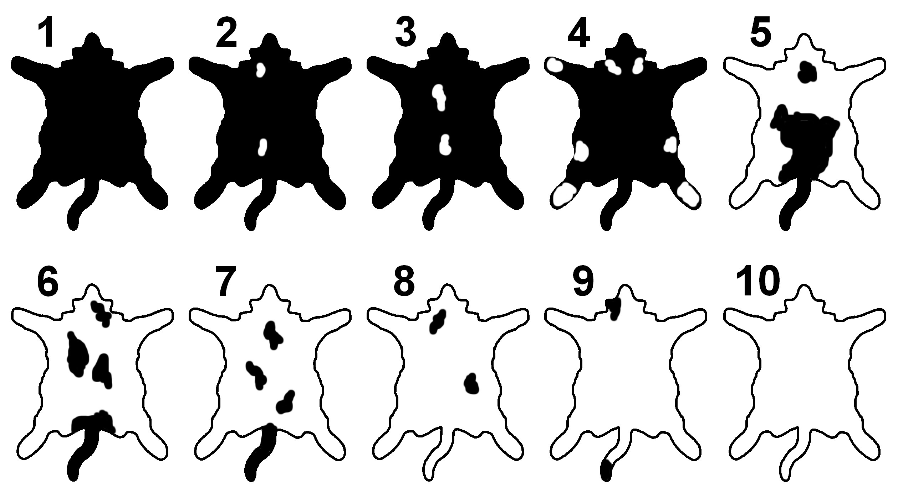
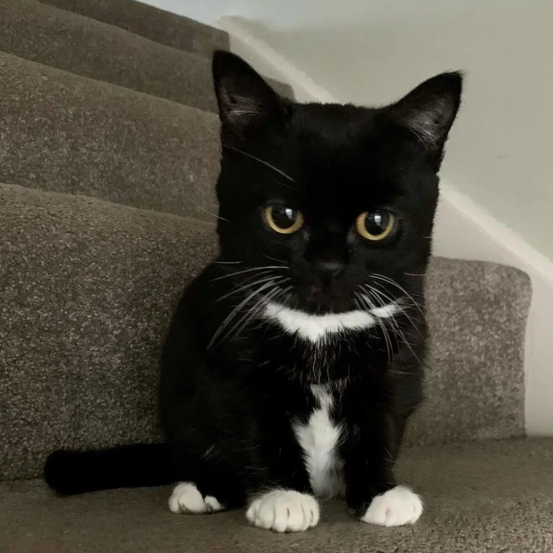
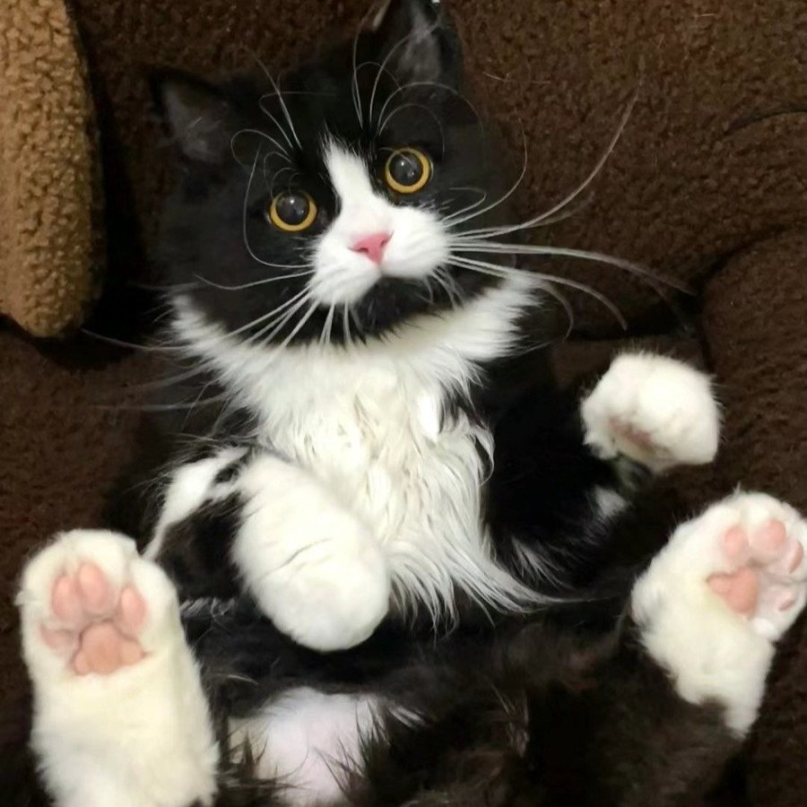
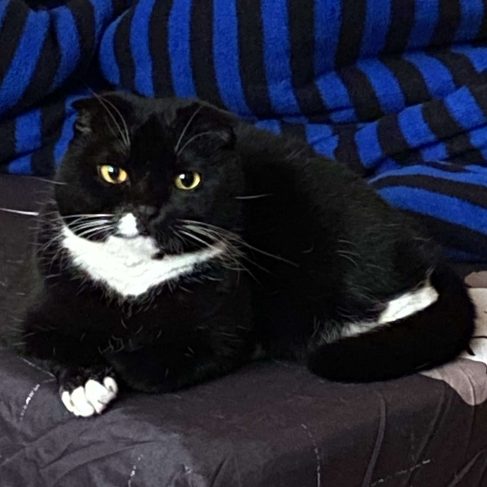
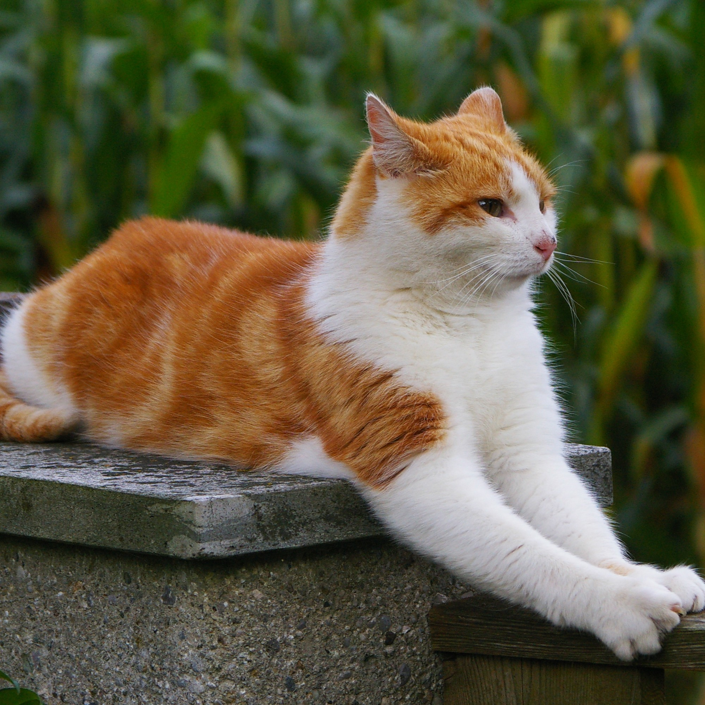
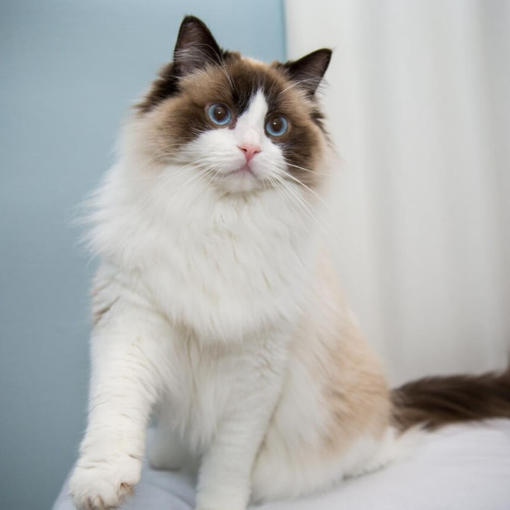
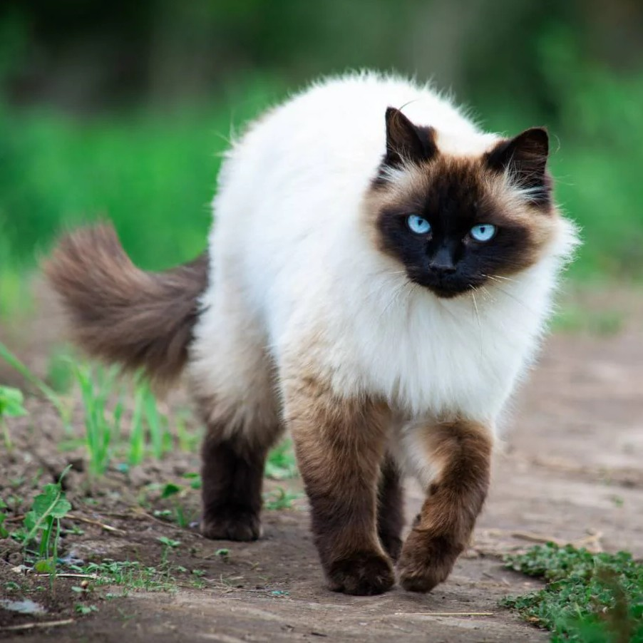
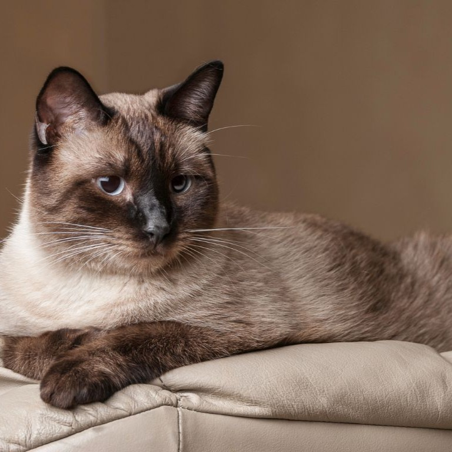

除了全色貓，還有雙色貓（混色貓），指身上帶有白色斑點的貓。白斑少於40%是屬於低度白斑、多於60%就屬於高度白斑，佔有40－60%則屬於等級5的雙色；等級10指的星貓的全身都被白斑覆蓋，成為一隻全白的貓。
白色斑點之外的另一種花色除了是全色，也可以是三花、玳瑁或虎斑，所以雙色貓不一定只有兩種顏色。而當兩種花色混在一起形成有趣圖案時，可以用一些特定的術語來形容，像是「梵」、「花斑」、「喜鵲」、「燕尾服」、「白手套」、「白領巾」等。不過，有些不正常的白斑並不是受到白斑基因的影響，而是因為基因突變、發育異常、疾病惡化或年齡衰退的緣故而產生。

1－10：雙色化 1至10級

手套

燕尾服

白領巾

虎斑雙色

面具
 感溫變色的貓：暹羅貓
感溫變色的貓：暹羅貓
暹羅貓體內具有突變的酪氨酸酶，會影響黑色素生長。而酶不耐熱，所以體溫高的軀幹（背部、腹部）的毛色較淺，而低溫的肢體末端（鼻尖、耳朵、四肢、尾巴）會出現深色區塊，也就是「重點色」。
暹羅貓剛出生時通常是全白的，因為母體子宮內溫暖且恆溫，出生後接觸到外界冷空氣，末端顏色才開始慢慢顯現。
• 耳朵：最容易因「體溫變化」而變深或變淺
• 臉部：特別是鼻子和面頰，色素改變明顯
• 四肢：包含腳掌與腿部，常見深淺變化
• 尾巴：末端顏色最容易隨「環境溫度」改變

